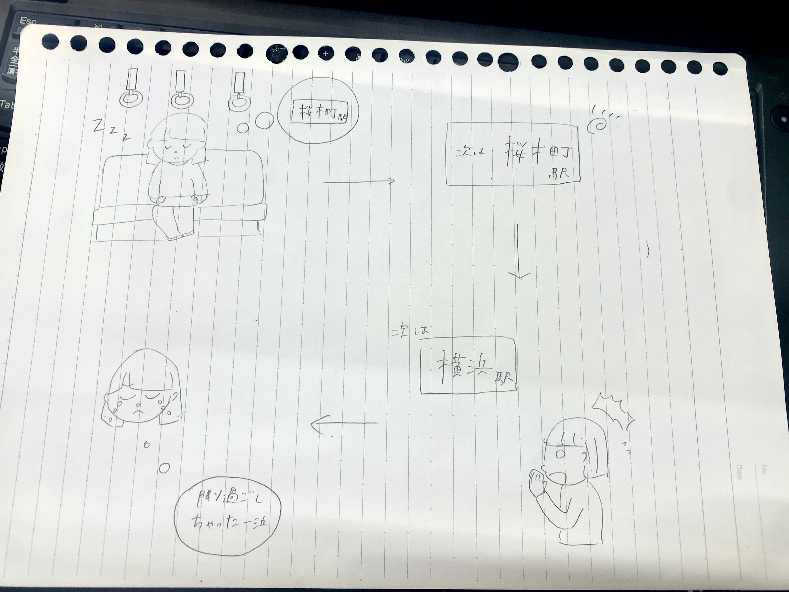

<H1>アイデアスケッチ</H1>
<H2>世の中の課題</H2>
<H3>実体験からビジネスとして活かせそうなもの</H3>
<br>
<BR>
<H3>電車での降り過ごしを防ぐ</H3>
電車で寝てしまい、降りたい駅で寝過ごしてしまったことがある人多いと思う。<BR>
実際に私がその経験が多くあり、悔しい思いをする。<BR>
スマートフォンの機能などで、降りたい駅を設定しておけば、スマホと電車の位置情報を照らし合わせて教えてくれる機能があればいいなと思った。<BR>
<br>